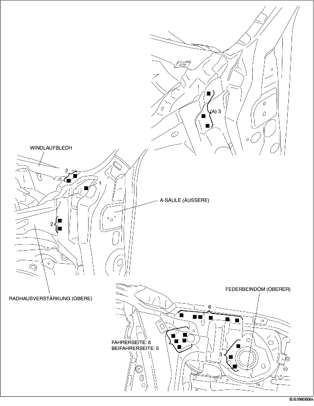
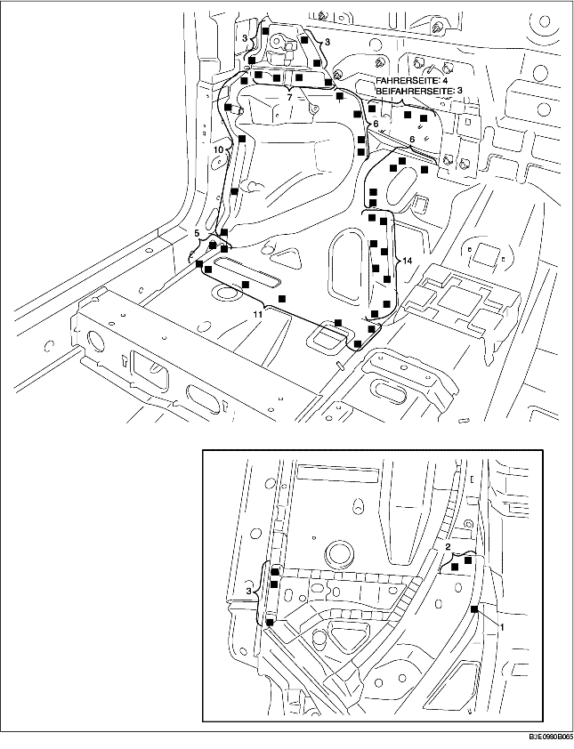
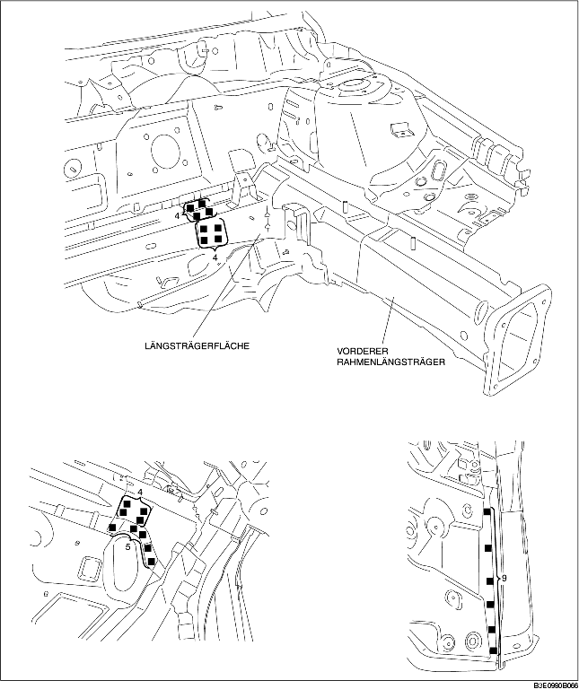

1. Beim Einbau neuer Teile, das Chassis falls erforderlich entsprechend der Standardabmessungen messen und einstellen.
2. Vor dem Einbau neuer Teile Löcher für das Lochschweißen aufbohren.
3. Die 3 mit (A) gekennzeichneten Schweißstellen schweißen und das vordere Teil des Rahmenlängsträgers provisorisch einbauen.
4. Nach der provisorischen Befestigung der neuen Teile sicherstellen, dass die zugehörigen Teile richtig passen.
5. Die verbleibenden Schweißstellen schweißen und das vordere Teil des Rahmenlängsträgers einbauen.


